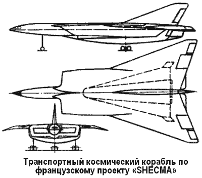
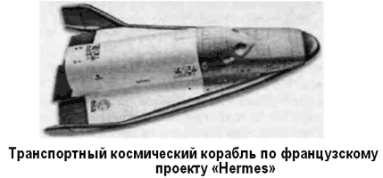

Французская космонавтика
Тема аэро-космических систем многоразового использования интересует не только НАСА и министерство обороны США — конструкторы других стран мира предлагают не менее интересные проекты перспективных космических кораблей, которые могли бы заменить «Спейс Шаттл».
Среди ранних разработок в этой области можно отметить, например, проект французской фирмы «Шекма» («SHECMA»). В конце 60-х годов эта фирма разрабатывала двухступенчатый транспортный космический корабль по схеме «воздушный старт».
Тяжелый самолет-носитель (первая ступень) имел силовую установку, включающую четыре ТРД и четыре турбопрямоточных реактивных двигателя на керосине. Было предусмотрено дополнительное впрыскивание криогенных компонентов.
Силовая установка орбитального самолета (вторая ступень) состояла из шесть двигателей, работающих на жидких кислороде и водороде. Четыре силовых двигателя имели тягу по 35 тонн, два двигателя управления — по 700 килограммов.
Планировалось, что разделение ступеней будет происходить при скорости полета 7 Махов на высоте 35 километров.
После этого самолет-носитель возвращается к месту старта, а орбитальная ступень по траектории, близкой к баллистической, выводится на рабочую орбиту.
В 1976 году Французский Национальный Центр космических исследований (CN ES) разработал свой первый проект создания пилотируемой транспортной системы, получивший название «Гермес» («Hermes»). Промышленная разработка осуществлялась параллельно фирмами «Аэроспасьяль» и «Дасо-Авиасьон».
На конференции Европейского Космического агентства, проходившей в Риме в 1985 году, Франция проинформировала партнеров о своем намерении начать осуществление этого проекта. Два года спустя собравшиеся в Гааге представители агентства согласились сделать проект общеевропейским.
Многоразовый космический корабль «Гермес» представляет собой воздушно-космический самолет с низкорасположенным крылом большой стреловидности в плане, выполненный по аэродинамической схеме «бесхвостка».

Как и у других известных воздушно-космических самолетов, крыло имеет тупую лобовую кромку с большим радиусом закругления и оснащено односекционными элевонами. Законцовки крыла плавно переходят в концевые шайбы, являющиеся по сути разнесенным двухкилевым оперением, оснащенным рулями направления. В задней части фюзеляжа установлен ставший уже традиционным для таких аппаратов балансировочный щиток.
Теплозащита использует апробированные теплоизоляционные материалы нескольких типов, расположенные на корпусе в соответствии с максимальными рабочими температурами поверхности. В зонах наибольшего нагрева (более 1400 °C) предполагалось использование углеродных композиционных материалов на основе углеродной матрицы, в других местах — теплозащитные плитки на основе карбида кремния и гибкие теплозащитные покрытия.
Процесс выбора облика воздушно-космического самолета протекал долго и трудно — несколько раз проект коренным образом пересматривался. Однако и последняя версия «Гермеса» не является оптимальной. Конструкторам так и не удалось полностью скомпоновать многоразовый космический корабль: из-за жестких весовых лимитов выбранной схемы целый ряд систем, используемых в орбитальном полете, пришлось вынести в одноразовый, сбрасываемый перед спуском с орбиты ресурсный модуль, играющий роль своеобразного служебно-агрегатного отсека. Этот же ресурсный модуль должен использоваться в качестве шлюзовой камеры при выходах членов экипажа в открытый космос. Таким образом, назвать корабль «Гермес» многоразовым, как «Спейс Шаттл» или «Буран», нельзя.
К недостаткам воздушно-космического самолета «Гермес» можно отнести и отсутствие негерметичного отсека полезного груза, что серьезно снижает возможности использования самолета для транспортных операций; таким образом габариты доставляемого на орбиту груза ограничены размерами (просветом) люка стыковочного узла. После катастрофы корабля «Челленджер» проект подвергся коренной переработке — количество членов экипажа было сокращено до трех, каждое рабочее место предусматривало оснащение катапультируемыми креслом, разработанным на основе катапультируемого кресла «К-36» корабля «Буран».
Выведение «Гермеса» на орбиту планировалось осуществлять ракетой-носителем «Ариан-5», запускаемой с космодрома Куру во Французской Гвиане. В стартовом положении он размещается сверху носителя. Боковая дальность при возвращении корабля на Землю с орбиты должна составить 1500–2000 километров. Полная масса орбитального корабля — 21 тонна, сухой конструкции — 13,9 тонны. Полезный груз может весить 3 тонны.
Благодаря широкому сотрудничеству в космической области между Советским Союзом и Францией французы в своем проекте широко использовали советский научно-технический задел. В частности, отряд французских «спасьонавтов» прошел полный курс обучения по методикам полетов на воздушно-космических самолетах. В системе теплозащиты «Гермеса» предполагалось использовать покрытия, разработанные для «Бурана». Французами использовались советские методики гиперзвуковых аэродинамических расчетов.

В первой половине 90-х годов проектанты «Гермеса» зашли в тупик: с одной стороны им не удалось уложиться в жесткие весовые лимиты, с другой — в процессе проектирования ракеты «Ариан-5» расчетная масса выводимой полезной нагрузки постоянно уменьшалась и в конечном итоге стала ниже допустимой для вывода воздушно-космического самолета на орбиту. Возникла необходимость перепроектировать «Гермес», что требовало дополнительного финансирования. Однако денег не нашлось, и проект был закрыт.